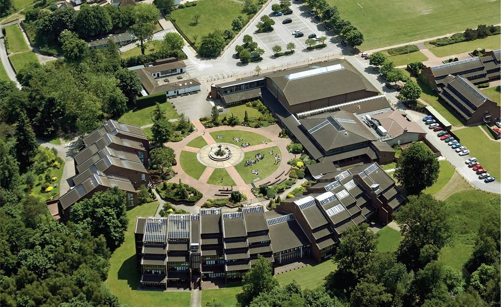
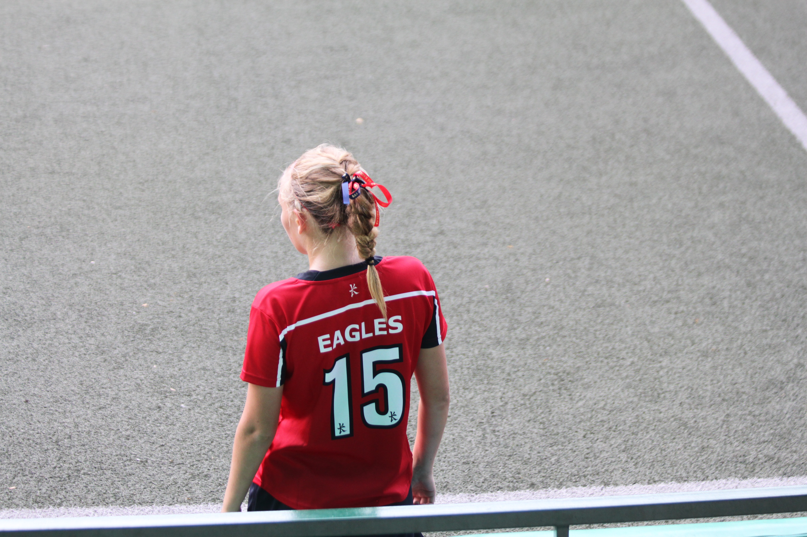

ENGLAND
SPORTS

Football South East England Regional Championship
Click here for SEESFA WebsiteSCHOOL
ACS Cobham International School, Cobham, England
Click here for ACS Cobham International School websiteSINGAPORE
SPORTS
IASAS International Soccer Tournament
Manila, Philipines 2016Click here for IASAS website
SCHOOL

Singapore American School
Singapore, 2016Click here for Singapore American School website